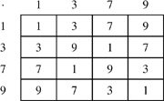
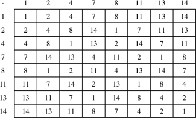

Networking Security Networking Security Networking Security Security Networking Security Networking Security Networking Charlie Kaufman Radia Perlman Mike Speciner Prentice Hall Network Security: Private Communication in a Public World, Second Edition
7.6. Zn*
First we'll define some notation. Z is used as the symbol for the set of all integers. Zn is the symbol for the set of integers mod n. So, for instance, Z10 = {0,1,2,3,4,5,6,7,8,9}.
Zn* is defined as the set of mod n integers that are relatively prime to n. So Z10* is {1,3,7,9}. Notice that 0 is missing from Z10*. That is because gcd(0,10) = 10, so 0 is not relatively prime to 10. It turns out that the multiplication table for Z10* (Figure 7-1) has some surprising properties.

One interesting observation is that all the entries are either 1, 3, 7, or 9. If you multiply any two numbers in Z10*, you get another number in Z10*. Even more surprising, each row and column contains all the elements of Z10*, with no repeats. You might wonder whether this is a coincidence having to do with the number 10, particularly if you weren't paying attention earlier in this chapter.
Let's try the same thing with 15 (Figure 7-2). The integers smaller than 15 that are relatively prime to 15 are {1,2,4,7,8,11,13,14}.

It turns out to be true in all cases that if you construct the multiplication table for Zn*, each row and column contains the elements of Zn* rearranged. (Homework Problem 6.)
Theorem: Zn* is closed under multiplication mod n.
Proof: Zn* is closed under multiplication mod n means that if a and b are in Zn*, then so is their product ab mod n. We know that m is relatively prime to n iff there are integers u and v such that um + vn = 1. So if a and b are in Zn*, there are integers ua, va, ub, and vb such that
ua a + va n = 1 | and | ub b + vb n = 1. |
Multiplying these two equations together gives
(uaub) ab + (uavb a + vaub b + vavb n)n = 1, |
so ab is in Zn*.
|